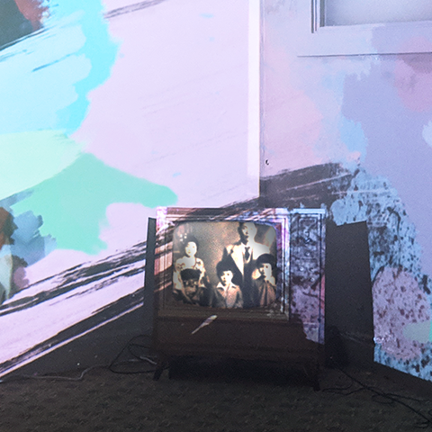
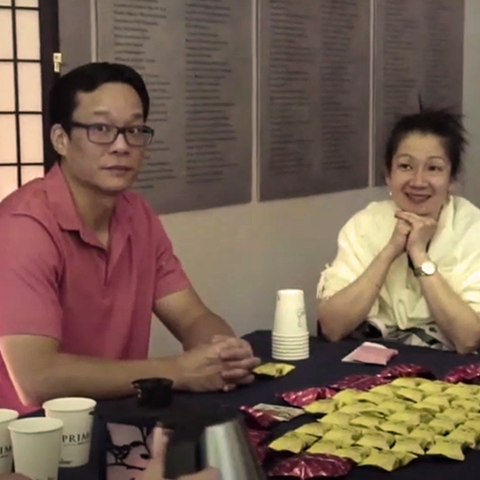
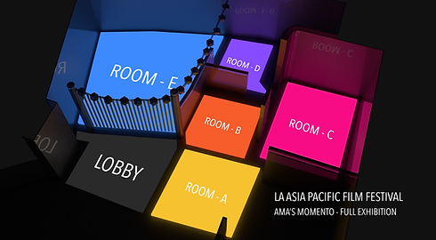

Ama's Momento
After almost two years of traveling, prototyping, and collecting feedback from Ama's Painted Corner, we created the final version of Ama's Momento that fully showed Ama's story and her dreams of creating an art museum. As a project lead, I used my experience from creating Ama's Painted Corner and meeting Ama, to guide new designers and engineers in better understanding Ama's story and personality.
Ama's Momento Exhibit consists of 6 sections

4. Project Boundaries

5. Community Dialogue
Experience & Story Flow
We used feedback from Ama's Painted Corner to update this installation.
We added more interactivity with sticky notes to the photo gallery and an AR timeline that contextualized the photo events in Ama's life. Additionally, we included an engaging mobile AR animation component to a larger collection of paintings. Lastly we switched the order of rooms and inserted the community dialogue before the final VR section, giving guests a chance to reflect and clear up any uncertainties with Awu, Ama's grandson.
Ama's Painted Corner experience layout

Ama's Momento final layout
LOBBY — Memory Gallery
Light table consisting of photos from Ama's life. Guests can write their thoughts on sticky notes around the table.
Acts as both opening and closing experience. Gives a chance to personalize the project and welcomes participation from the community.
ROOM A — Ama's Journey
Light table with map of Ama's journey across Taiwan and America. Guests can explore a directed AR experience and listen to Ama talk about her life from an IPAD.
Sequences Ama's memories and gives clear story on her background.
ROOM B — AR-t Gallery
Gallery of several physical painting duplicates from Ama's personal collection. Guests can scan paintings with their phones to watch AR animations and learn more about the painting's importance.
Introduces the importance of Ama's personal collection. Helps guests empathize with the preciousness of these paintings through Ama's voiceover.
ROOM C — Projected Boundaries
Projection mapping introducing Ama's upbringing, her dream of sharing her painting collection, and the challenges that kept her dream from becoming reality.
Builds up empathy for Ama's difficult journey and motivation.
ROOM D — Communal Room
A moment of reflection and dialogue with Awu, Ama's grandson.
Guests reflect and discuss with Awu about the experience so far after learning about Ama's journey. Guests also learn about our role in creating this experience for Ama.
ROOM E — Virtual Musuem
A VR museum showcasing Ama's entire painting collection and several VR pieces the team created together. This is our gift to Ama.
Guests get a postive payoff following Ama's hindered attempt to create an art museum. They leave with a feeling of renewed hope.
" Heart-achingly thoughtful " - LA Times
Final Results
The final result was a 20 minute mixed reality installation, which we showed at various different musuems and conferences, including Indiecade, VR for change, LA Asia Pacific Film Festival, Japanese American National Museum,Tainan Art Museum and Infinity Festival. We were met with overwhelming support and positive response from the community, with many asking how they could accoomplish a similar experience for their loved ones.
After displaying the experience at the Tainan Art Musuem, local culture officials reconnected with Ama and approved her proposal to create an art museum, signed off by the Taiwanese Government.


{kind=link}
{kind=link}